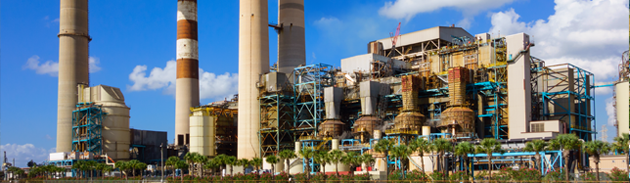
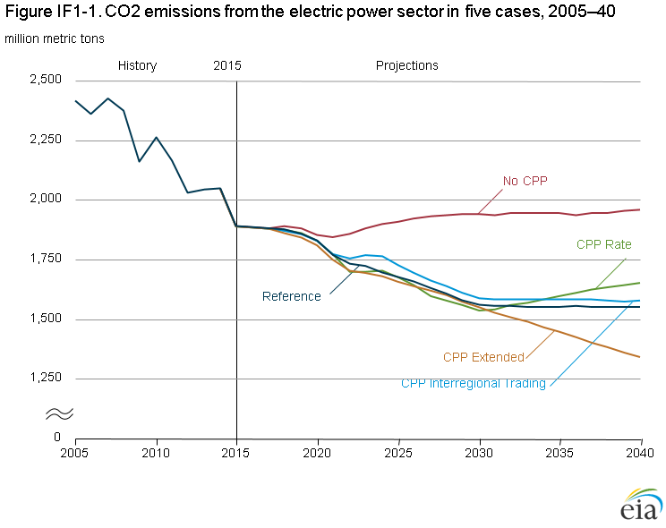
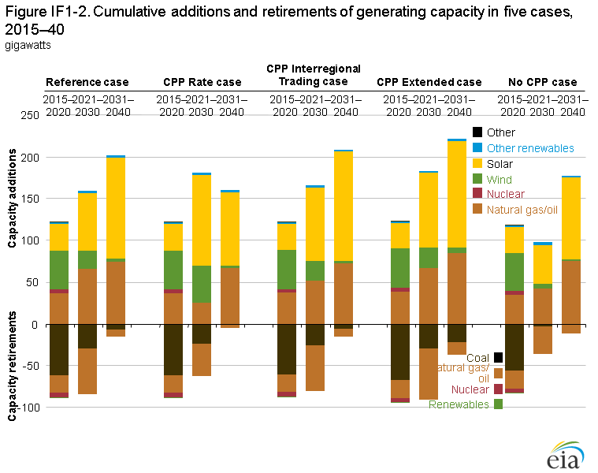
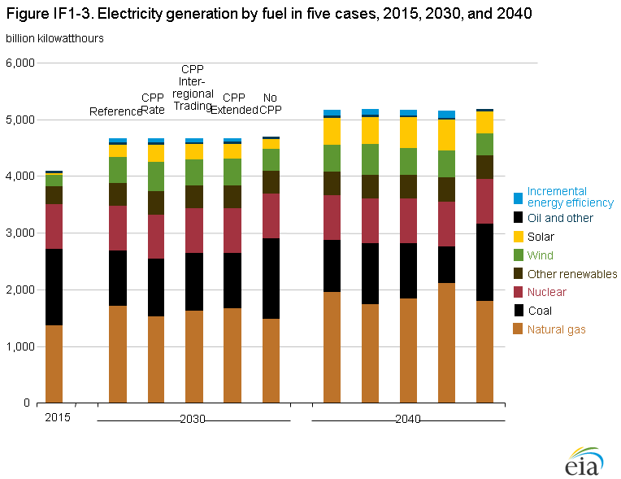
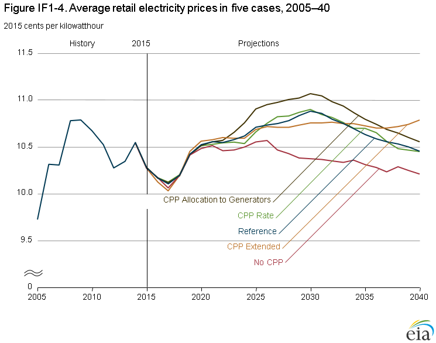
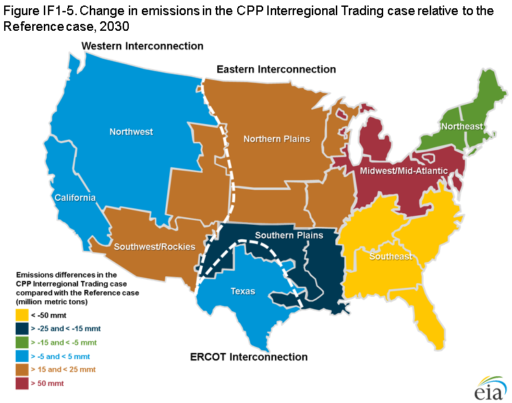
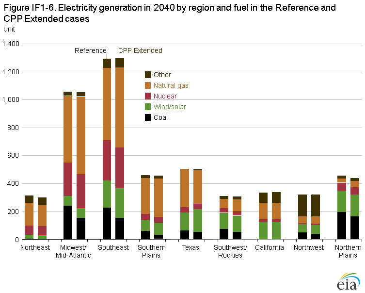

Effects of the Clean Power Plan
Release Date: 6/20/16
The Clean Power Plan (CPP) [1] rule, issued under Section 111(d) of the Clean Air Act, is the U.S. Environmental Protection Agency (EPA) program to regulate carbon dioxide (CO2) emissions at existing fossil-fired electric power plants. EPA estimates that the CPP will reduce CO2 emissions from the power sector by 32% from 2005 levels by 2030. As described in the Annual Energy Outlook 2016 (AEO2016) Legislation and Regulations section, the CPP rule allows states to choose either mass-based or rate-based emissions targets. A mass-based target simply specifies an annual limit on the amount of CO2 that can be emitted by states from the affected sources. A rate-based target requires states to meet an annual adjusted emission rate (lbs CO2/MWh) based on emissions from affected sources divided by generation from affected sources, which for this calculation includes new non-emitting sources, such as nuclear and renewable capacity, and incremental energy efficiency. The rule also provides flexibility in other areas, such as regional cooperation through trading.
The final rule incorporated in the AEO2016 is a revision to the initial proposal [2] that U.S. Energy Information (EIA) analyzed in May 2015 [3]. The final rule differs from the initial proposal in several ways, including:
- The compliance start date has been delayed from 2020 to 2022, and the reductions are phased in between 2022 and 2030 using 3 sets of multi-year, interim goals instead of one interim period.
- Demand-side energy efficiency was not used in setting rate-based targets although it still may be used for compliance.
- The variations between state targets have been reduced by using source-specific rates for fossil fuel steam and natural gas-fired combined-cycle generation at the interconnection level, rather than individual state emission rates.
- Compliance calculations for rate-based targets have been limited to capacity additions since 2012, rather than also including pre-existing renewable capacity and at-risk nuclear plants.
- Greater detail is provided for mass-based implementation approaches and emissions credit trading.
In comparison with the EIA's analysis of the preliminary CPP rule, which was based on the Annual Energy Outlook 2015 (AEO2015) Reference case, the analysis described here includes other differences in underlying trends that are unrelated to the CPP but influence compliance decisions. These differences include lower natural gas prices, lower capital costs for renewable electricity generation plants, and extension of renewable tax credits.
In February 2016, the U.S. Supreme Court issued a stay of enforcement of the existing plant rule [4], pending resolution of legal challenges from the states and the affected industries. The AEO2016 Reference case assumes that the CPP will proceed as currently promulgated, and that all states will implement it by using a mass-based standard that caps emissions from both existing and new power plants, with allowance revenues rebated to ratepayers [5]. Alternative cases consider how outcomes could change with different implementation approaches, without the rule in place, and in a scenario with tighter standards beyond 2030.
Reductions in CO2 emissions can be achieved by switching from carbon-intensive fuels (such as coal) to less carbon-intensive natural gas-fired power plants or to zero-carbon technologies (such as renewables and nuclear power). Other options to reduce CO2 emissions include improving plant efficiency to reduce fuel use and increasing energy efficiency to reduce energy demand. Compliance decisions made by the states, as well as any future court decision regarding the rule, would have implications for plant retirements, capacity additions, generation by fuel type, demand, and prices.
Alternative Clean Power Plan cases
As described in the Legislation and regulations section below, the AEO2016 Reference case assumes that the CPP is upheld, and that all states choose to meet a mass-based standard to cover both existing and new sources. Using the standard that includes new sources ensures that leakage (which would represent a shift of emissions from existing sources to new natural gas-fired sources not covered by the CPP) does not occur. Because EIA's model is not developed at the state level, and because some level of trading is likely to happen among states with the mass-based approach, the Reference case assumes compliance at the same level in the 22 electricity regions included in the Electricity Market Model (EMM) [6]. An aggregate cap is calculated for each region, with the implicit assumption that carbon allowance trading can occur within the region. The Reference case also assumes that the allowances are allocated to load-serving entities, which provide the revenue back to consumers through lower distribution prices. The cap is specified for 2022 through 2030, based on EPA specifications, and remains flat at 2030 levels thereafter.
No CPP case
The No CPP case assumes that the final CPP rule is permanently voided and is not replaced by other controls on power sector CO2 emissions. States have no federal requirement to reduce CO2 emissions from existing power plants, but other programs remain in place, including the Regional Greenhouse Gas Initiative (RGGI) [7], the California Assembly Bill 32 (AB32), and the Global Warming Solutions Act of 2006 [8]. Also, state and regional renewable portfolio standard programs remain in place, as described in the Legislation and regulations section, and may have an indirect impact on CO2 emissions.
CPP Rate case
The CPP provides state-specific, rate-based targets as an option for compliance. The affected electricity generation used in the rate calculation includes existing fossil steam and natural gas-fired combined-cycle units, incremental renewable generation added since January 2012, incremental nuclear generation, and incremental energy efficiency. Renewable capacity added in the end-use sectors also can be used to offset the affected emissions in the rate calculation. The CPP Rate case assumes that all regions (even those currently under mass-based programs such as in the Northeast and California) choose to comply with the CPP by meeting average rate-based targets—calculated as pounds of CO2 per megawatthour (lb/MWh)—in each EMM region. The rates are based on a weighted average of the state targets, specified by year from 2022 to 2030 as provided in the CPP. After 2030, the average emission rates for each region remain constant through 2040, implying that total emissions can increase after 2030 as electricity generation increases.
CPP Interregional Trading case
The EPA allows trading of carbon allowances among states, as long as the states involved use the mass-based compliance option. The CPP Interregional Trading case assumes that all regions choose to meet mass-based targets, covering existing and new sources (as in the AEO2016 Reference case), but with trading of carbon allowances between regions within the Eastern Interconnection and within the Western Interconnection. In the CPP Interregional Trading case, regions that reduce emissions by more than is needed to meet their own regional caps may trade their excess allowances, enabling the purchasing regions to exceed their nominal emissions caps.
CPP Extended case
The CPP Extended case further reduces the CO2 targets after 2030 instead of maintaining a constant standard, as specified in the CPP. This case assumes that the mass-based limits in 2030, which result in power sector CO2 emissions that are about 35% below 2005 levels, continue to decline linearly to achieve a 45% reduction below 2005 levels in 2040. The post-2030 reductions are applied using the same rate of decline for each state.
CPP Hybrid case
Unlike the CPP Rate case, the CPP Hybrid case assumes that regions in which existing programs enforce carbon caps (RGGI in the Northeast [9] and AB32 in California) comply with the CPP through a mass-based target (considered more likely given their public comments on the rule). The CPP Hybrid case also assumes that states in other regions implement the CPP using a rate-based approach. This case assumes no interregional trading for CPP compliance. Because the RGGI and AB32 constraints already are reducing emissions in these regions, the RGGI states and California tend to overcomply with their CPP requirements, whether implemented as a mass-based or rate-based standard. Consequently, the results of the CPP Hybrid case are similar to those of the CPP Rate case, because these regions do not need to behave differently to comply with either a mass- or a rate-based standard. The remaining regions are assumed to have rate-based standards in both cases. Because the results are indistinguishable, the following discussion of the case results does not include the CPP Hybrid case.
CPP Allocation to Generators case
The CPP Allocation to Generators case assumes that (as in the Reference case) all regions meet mass-based caps that include new sources; however, the case also assumes that the carbon allowances are allocated to electricity generators rather than to load-serving entities. The CPP Allocation to Generators case also assumes that generators in competitive regions will continue to include the value of their carbon allowances in their operating costs. As a result, marginal generation costs will reflect the costs of allowances. The Reference case assumes that allowances are allocated to load-serving entities, which then refund the revenue from allowance sales to consumers through lower distribution prices. In the CPP Allocation to Generators case, retail electricity prices are higher than in the Reference case because there is no reduction of distribution costs, showing the impact of allowance allocation alternatives on retail prices. Because the impact of the CPP Allocation to Generators case is primarily on retail prices—and not on changes in how compliance is achieved, so that capacity and generation mix results are close to those in the Reference case—this case is discussed primarily in terms of pricing impacts.
Results
CO2 Emissions
In the Reference case, which assumes that states comply with mass-based CPP requirements, total CO2 emissions from the U.S. electric power sector in 2030 are 35% below their 2005 level. Emissions from the electric power sector, which have historically been the largest source of energy-related CO2 emissions in the United States, fall below those in the transportation sector by 2020 and throughout the remainder of the projection. After 2030, with the carbon cap assumed to remain flat and binding in almost all regions, emissions remain constant through 2040 (Figure IF1-1). Roughly the same reduction is seen in 2030 in the CPP Rate case, consistent with EPA's intent to develop equivalent measures for the alternate programs. After 2030, emissions increase in the CPP Rate case, and in 2040 they are only 32% below the 2005 total, because a constant emission rate standard can result in increasing emissions when overall generation is growing. Relative to the No CPP case, the power-sector CO2 emissions are 18% to 21% lower in 2030 across the cases that include the CPP and 16% to 21% lower in 2040 in all CPP cases except the CPP Extended case. The CPP Extended case assumes that further CO2 emissions reductions, beyond those currently specified in the CPP, are required after 2030, to 45% below 2005 levels in 2040, or 32% below the 2040 emissions total in the No CPP case.
figure data
In the CPP Interregional Trading case, emissions are slightly higher than in the Reference case because several regions overcomply, emitting less than their caps. This is typically because of enforcement of other state- or region-specific programs to reduce emissions or encourage renewables. In the CPP Interregional Trading case, where a market exists for those regions to sell their excess allowances, enabling other regions to emit above their caps. As a result, overall U.S. electricity-related CO2 emissions in the 2030–40 projection period are approximately 2% higher in the CPP Interregional Trading case than in the Reference case.
Capacity expansion and retirements
Relative to the No CPP case, the AEO2016 Reference case and the other CPP cases all result in more retirements of coal-fired and other fossil-fired steam plant capacity and increases in total renewable capacity additions, as regions reduce emissions to comply with mass-based or rate-based CO2 emissions standards (Figure IF1-2). The impact on natural gas-fired capacity varies somewhat with the CPP implementation decisions. Natural gas-fired plants produce less CO2 per kilowatthour (kWh) of electricity generated than is produced by coal-fired plants. However, replacement of coal plants with new natural gas plants does not reduce emissions to the same extent as replacement with new renewable plants.
figure data
Of the cases that maintain the final CPP target beyond 2030, the AEO2016 Reference case (which includes the mass-based approach) has the highest level of fossil-fired capacity retirements and the most new natural gas-fired capacity additions. To comply by EMM region using a mass-based standard, the EMM regions choose to replace existing fossil-fired plants with both new renewable generating capacity and new, more efficient, natural gas-fired combined-cycle plants. In the CPP Rate case, zero-emitting generation can help meet the rate standard both by offsetting emissions and by providing additional affected generation used to calculate the rate. As a result, more new renewable capacity is added than in the Reference case. Natural gas-fired combined-cycle capacity additions are 48 gigawatts (GW) lower than in the Reference case, and fossil-fired capacity retirements are 33 GW lower.
Because the rate standard allows new renewable generation to be included in the base of the rate calculation, additional incentive exists to meet incremental load growth with renewable capacity rather than with natural gas-fired capacity. Consequently, more existing fossil-fired capacity continues to operate. In the CPP Rate case, significantly more wind and solar capacity is added by 2030 than in the Reference case, but less is added after 2030. In the CPP Rate case, less incremental change is required after 2030 to maintain the emission rate standard than is required to maintain the mass-based cap in the Reference case as electricity demand increases.
In the CPP Interregional Trading case, a shift from natural gas-fired additions to renewable additions also occurs. Although regions are still required to meet a mass-based standard in the CPP Interregional Trading case, the ability to trade allowances provides regions that have cheaper renewable sources an incentive to exceed the required standards so they have excess allowances to sell. The availability and costs of renewable energy resources can vary significantly across the country. Broader allowance trading can allow for more economical means to achieve compliance overall. Regions that are best able to lower their emissions can sell allowances to regions that have fewer options to reduce emissions. In the CPP Interregional Trading case, solar capacity additions increase by 31 GW and natural gas-fired additions decrease by 15 GW from the 2040 totals in the Reference case. Also, 5 GW less capacity is retired as more existing capacity remains online in regions that purchase allowances.
In the CPP Extended case, the mix of compliance actions is similar to that of the Reference case, but larger shifts are needed after 2030. From 2015 to 2030, plans for future declines in emissions targets will result in changes to the generation capacity mix, retiring an additional 12 GW of fossil-fired capacity and adding 20 GW of solar capacity beyond the Reference case totals. After 2030, the differences are more significant, with another 21 GW of incremental fossil-fired retirements in the CPP Extended case beyond the Reference case, and additional solar (7 GW) and natural gas-fired (11 GW) capacity.
Generation fuel mix
Across the AEO2016 Reference case and CPP cases, shifts in the generation fuel mix reduce coal-fired generation by between 24% and 28% from 2015 to 2030 (Figure IF1-3). The declines from 2015 to 2040 vary across the cases, ranging from 20% to 32% across the cases that keep the CPP target constant after 2030. The rate-based case allows some increase in coal generation in the later years as long as sufficient renewable generation is available to offset it. The mass-based case continues to reduce coal generation and uses lower-emitting sources to meet new demand and maintain the same emission cap. In the CPP Extended case, which assumes that CO2 emissions target continues to decline after 2030, coal generation in 2040 is 52% below 2015 levels. In the No CPP case, coal electricity generation increases slightly from 2015 levels, as natural gas prices increase and as existing coal units are used at higher levels than in 2015, but remains relatively flat after 2020. Most growth in electricity demand is met by generation with natural gas and renewable capacity, which are more economic to build to meet new demand even without the CPP in place.

figure data
The tradeoff between natural gas and renewable capacity for compliance in the AEO2016 Reference case versus the CPP Rate case similarly affects the electricity generation mix across the cases. The natural gas share of total electricity generation grows from 33% in 2015 to 37% in 2030 in the Reference case and remains at 33% in the CPP Rate case, while the renewable share grows from 13% in 2015 to 24% in the Reference case and to 27% in the CPP Rate case. The CPP Interregional Trading case provides regions with more flexibility by allowing them to purchase allowances and reduce their own emissions, resulting in more renewable generation and less replacement of coal-fired generation with natural gas-fired generation than in the Reference case. Incremental demand-side energy efficiency (EE), measured as additional to what occurs without the CPP in place, lowers electricity demand by 73 billion kWh to 76 billion kWh in 2030 across the Reference, CPP Rate and CPP Interregional Trading cases. The additional EE impacts the calculation of the achieved emissions rate for a region, as the kWh are included in the denominator of the calculation. However, incremental EE can also help in meeting a mass-based target by reducing the need for additional fossil-fired generation by reducing electricity demand.
The CPP Extended case requires further shifts beyond 2030, resulting in a significant drop in coal's share of generation, from 33% in 2015 to 21% in 2030 and to 13% in 2040. In 2040, both the renewable share and the natural gas share, at 29% and 42% of total electricity generation, respectively, are higher than those in the Reference case. Incremental EE is also 21 billion kWh higher in the CPP Extended case compared with the Reference case. In 2030, natural gas-fired generation in the CPP Extended case is slightly lower than in the Reference case, as more early development of renewable capacity occurs in anticipation of the declining target.
Electricity prices
Retail electricity prices are higher when the CPP is in place than when it is not, as the fuel and capital costs of complying with the rule by shifting to natural gas-fired generation, or by building new renewable capacity, are passed through to retail prices. Price impacts are similar in the Reference and the CPP Rate cases, with constant dollar retail prices increasing by 1% to 5% above prices in the No CPP case over the 2022–30 CPP compliance period (Figure IF1-4). Prices remain, on average, 3% higher in constant dollars in the Reference and the CPP Rate case than in the No CPP case after 2030. In the CPP Extended case, average electricity prices are slightly lower than in the Reference case through 2030, as additional renewable capacity is added and as less natural gas-fired capacity is used for generation, with less impact on natural gas prices. Delivered natural gas prices in 2030 are 4% lower in the CPP Extended case than in the Reference case; but after 2030, the CPP Extended case requires further emissions reductions and more natural gas use. In the Reference case, electricity prices decline after 2030. In the CPP Extended case, incremental compliance costs keep electricity prices higher, and in 2040 they are 3% and 6% higher than in the Reference and No CPP cases, respectively.

figure data
Under a mass-based standard, states have options for the allocation of carbon allowances, with implications for electricity prices. The AEO2016 Reference case assumes that allowances will be allocated to load-serving entities, which will pass along the revenues from allowance sales to consumers in the form of rebates to lessen the price effects of CPP compliance. This rebate is reflected through lower electric distribution system costs. The CPP Allocation to Generators case assumes that allowances are distributed to generators. As a result, retail prices in competitive regions are higher, and average electricity prices from 2022 to 2040 in the CPP Allocation to Generators case are 1% higher than in the Reference case and 4% higher than in the No CPP case.
Regional Impacts
Although the targets in the final Clean Power Plan rule have less variability across the states than those in the proposed rule, different reduction levels still are required across the country, and compliance impacts differ among regions. As described earlier, EIA's modeling assumes that the CPP targets are implemented at the level of the electricity model regions [10] (see Appendix F). To permit a more concise display of the results in the following discussion of regional impacts, these 22 regions are grouped into 9 larger regions, with groupings of neighboring regions that have similar generation profiles and tend to use similar measures for CPP compliance (Table IF1-1 and Figure IF1-5). Detailed results for the 22 EMM regions are available on EIA's website at http://www.eia.gov/outlooks/aeo/data/browser/.
| Aggregate region | EMM regions included in aggregate region | ||
|---|---|---|---|
| Northeast | 5 | NEWE | Northeast Power Coordinating Council (NPCC) / Northeast |
| Northeast | 6 | NYCW | NPCC / New York City-Westchester |
| Northeast | 7 | NYLI | NPCC/ Long Island |
| Northeast | 8 | NYUP | NPCC/ Upstate New York |
| Midwest/Mid-Atlantic | 9 | RFCE | ReliabilityFirst Corporation–East |
| Midwest/Mid-Atlantic | 10 | RFCM | ReliabilityFirst Corporation–Michigan |
| Midwest/Mid-Atlantic | 11 | RFCW | ReliabilityFirst Corporation–West |
| Southeast | 2 | FRCC | Florida Reliability Coordinating Council |
| Southeast | 14 | SRSE | SERC Reliability Corporation (SERC)/Southeast |
| Southeast | 15 | SRCE | SERC/ Central |
| Southeast | 16 | SRVC | SERC/ Virginia-Carolina |
| Southern Plains | 12 | SRDA | SERC/ Delta |
| Southern Plains | 18 | SPSO | Southwest Power Pool South |
| Texas | 1 | ERCT | Texas Regional Entity |
| Southwest/Rockies | 19 | AZNM | Western Electricity Coordinating Council (WECC)/Arizona New Mexico |
| Southwest/Rockies | 22 | RMPA | WECC/ Rockies |
| California | 20 | CAMX | WECC/ California |
| Northwest | 21 | NWPP | WECC/ Northwest Power Pool Area |
| Northern Plains | 3 | MROE | Midwest Reliability Council–East |
| Northern Plains | 4 | MROW | Midwest Reliability Council–West |
| Northern Plains | 13 | SRGW | SERC/ Gateway |
| Northern Plains | 17 | SPNO | Southwest Power Pool North |
| Notes: Names of grouped regions are intended to be approximately descriptive of location. Exact regional boundaries do not necessarily correspond to state borders or to other regional naming conventions. Aggregate region data are summed or averaged over the electricity model regions listed. | |||

The current mix of generation types across the regions varies considerably. The Northern Plains, Midwest/Mid-Atlantic, and Southwest/Rockies regions rely the most on coal-fired generation (Table IF1-2 and Table IF1-3). Texas, the Southern Plains, and the Southeast have coal-fired generation in their mixes, along with nuclear and renewables, but these regions rely most heavily on natural gas-fired generation. The Northeast and California have almost no coal-fired generation, and their electricity is generated primarily from natural gas, along with renewables in California and a mix of nuclear and renewables in the Northeast. The Northwest has some coal-fired generation but relies predominantly on hydroelectric and other renewable electricity generation, with a relatively small share of natural gas-fired generation.
| 2030 | ||||||
|---|---|---|---|---|---|---|
| Region | Fuel type | 2015 | Reference | CPP Rate | CPP Interregional Trading | No CPP |
| Northeast | Nuclear | 76 | 63 | 63 | 63 | 63 |
| Coal | 7 | 7 | 6 | 1 | 6 | |
| Natural gas | 130 | 150 | 134 | 135 | 137 | |
| Wind/solar | 9 | 25 | 24 | 24 | 25 | |
| Other | 45 | 51 | 51 | 51 | 51 | |
| Midwest/Mid Atlantic | Nuclear | 275 | 242 | 242 | 242 | 242 |
| Coal | 467 | 270 | 270 | 374 | 445 | |
| Natural gas | 177 | 377 | 308 | 317 | 265 | |
| Wind/solar | 25 | 50 | 145 | 50 | 46 | |
| Other | 27 | 32 | 33 | 32 | 32 | |
| Southeast | Nuclear | 253 | 291 | 291 | 291 | 291 |
| Coal | 230 | 232 | 248 | 165 | 333 | |
| Natural gas | 418 | 480 | 438 | 466 | 395 | |
| Wind/solar | 3 | 79 | 112 | 133 | 64 | |
| Other | 60 | 66 | 66 | 66 | 66 | |
| Southern Plains | Nuclear | 41 | 40 | 40 | 40 | 40 |
| Coal | 108 | 69 | 81 | 53 | 99 | |
| Natural gas | 173 | 221 | 176 | 217 | 177 | |
| Wind/solar | 25 | 67 | 81 | 71 | 69 | |
| Other | 20 | 21 | 21 | 21 | 21 | |
| Texas | Nuclear | 40 | 40 | 40 | 40 | 40 |
| Coal | 84 | 73 | 90 | 73 | 115 | |
| Natural gas | 214 | 230 | 195 | 231 | 230 | |
| Wind/solar | 36 | 97 | 111 | 99 | 60 | |
| Other | 3 | 4 | 4 | 4 | 4 | |
| Southwest/Rockies | Nuclear | 32 | 32 | 32 | 32 | 32 |
| Coal | 112 | 74 | 73 | 93 | 99 | |
| Natural gas | 62 | 60 | 84 | 63 | 67 | |
| Wind/solar | 19 | 87 | 70 | 75 | 71 | |
| Other | 18 | 21 | 21 | 21 | 21 | |
| California | Nuclear | 18 | 18 | 18 | 18 | 18 |
| Coal | 9 | 1 | 1 | 1 | 1 | |
| Natural gas | 116 | 116 | 113 | 110 | 122 | |
| Wind/solar | 32 | 83 | 75 | 82 | 75 | |
| Other | 42 | 68 | 67 | 67 | 67 | |
| Northwest | Nuclear | 9 | 9 | 9 | 9 | 9 |
| Coal | 73 | 52 | 56 | 55 | 56 | |
| Natural gas | 47 | 41 | 45 | 41 | 49 | |
| Wind/solar | 24 | 56 | 53 | 56 | 44 | |
| Other | 121 | 148 | 151 | 148 | 148 | |
| Northern Plains | Nuclear | 53 | 54 | 54 | 54 | 54 |
| Coal | 261 | 194 | 169 | 213 | 266 | |
| Natural gas | 10 | 22 | 33 | 23 | 24 | |
| Wind/solar | 54 | 135 | 155 | 133 | 115 | |
| Other | 18 | 22 | 22 | 22 | 22 | |
| U.S. Total | Nuclear | 798 | 798 | 789 | 789 | 789 |
| Coal | 1,355 | 972 | 995 | 1,029 | 1,422 | |
| Natural gas | 1,348 | 1,702 | 1,531 | 1,607 | 1,471 | |
| Wind/solar | 227 | 683 | 830 | 727 | 571 | |
| Other | 362 | 443 | 446 | 442 | 442 | |
| Notes: Names of grouped regions are intended to be approximately descriptive of location. Exact regional boundaries do not necessarily correspond to state borders or to other regional naming conventions. Aggregate data for each region are summed or averaged over the electricity model regions listed. United States totals include estimated projections for Alaska and Hawaii, which are not included within any listed region. | ||||||
| 2030 | ||||||
|---|---|---|---|---|---|---|
| Region | Fuel type | 2015 | Reference | CPP Rate | CPP Interregional Trading | No CPP |
| Northeast | Nuclear | 29% | 21% | 23% | 23% | 22% |
| Coal | 3% | 2% | 2% | 1% | 2% | |
| Natural gas | 49% | 51% | 48% | 49% | 49% | |
| Wind/solar | 3% | 8% | 8% | 9% | 9% | |
| Other | 17% | 17% | 18% | 19% | 18% | |
| Midwest/Mid Atlantic | Nuclear | 28% | 25% | 24% | 24% | 23% |
| Coal | 48% | 28% | 27% | 37% | 43% | |
| Natural gas | 18% | 39% | 31% | 31% | 26% | |
| Wind/solar | 3% | 5% | 15% | 5% | 4% | |
| Other | 3% | 3% | 3% | 3% | 3% | |
| Southeast | Nuclear | 26% | 25% | 25% | 26% | 25% |
| Coal | 24% | 20% | 21% | 15% | 29% | |
| Natural gas | 43% | 42% | 38% | 42% | 34% | |
| Wind/solar | 0% | 7% | 10% | 12% | 6% | |
| Other | 6% | 6% | 6% | 6% | 6% | |
| Southern Plains | Nuclear | 11% | 10% | 10% | 10% | 10% |
| Coal | 30% | 16% | 20% | 13% | 24% | |
| Natural gas | 47% | 53% | 44% | 54% | 44% | |
| Wind/solar | 7% | 16% | 20% | 18% | 17% | |
| Other | 6% | 5% | 5% | 5% | 5% | |
| Texas | Nuclear | 11% | 9% | 9% | 9% | 9% |
| Coal | 22% | 16% | 20% | 16% | 26% | |
| Natural gas | 57% | 52% | 44% | 52% | 51% | |
| Wind/solar | 9% | 22% | 25% | 22% | 13% | |
| Other | 1% | 1% | 1% | 1% | 1% | |
| Southwest/Rockies | Nuclear | 13% | 12% | 11% | 11% | 11% |
| Coal | 46% | 27% | 26% | 33% | 34% | |
| Natural gas | 25% | 22% | 30% | 22% | 23% | |
| Wind/solar | 8% | 32% | 25% | 26% | 25% | |
| Other | 7% | 8% | 8% | 7% | 7% | |
| California | Nuclear | 8% | 6% | 7% | 6% | 6% |
| Coal | 4% | 0% | 0% | 0% | 0% | |
| Natural gas | 53% | 41% | 41% | 40% | 43% | |
| Wind/solar | 15% | 29% | 27% | 30% | 27% | |
| Other | 19% | 24% | 24% | 24% | 24% | |
| Northwest | Nuclear | 3% | 3% | 3% | 3% | 3% |
| Coal | 27% | 17% | 18% | 18% | 18% | |
| Natural gas | 17% | 13% | 14% | 13% | 16% | |
| Wind/solar | 9% | 18% | 17% | 18% | 14% | |
| Other | 44% | 48% | 48% | 48% | 48% | |
| Northern Plains | Nuclear | 13% | 13% | 12% | 12% | 11% |
| Coal | 66% | 45% | 39% | 48% | 55% | |
| Natural gas | 3% | 5% | 8% | 5% | 5% | |
| Wind/solar | 14% | 31% | 36% | 30% | 24% | |
| Other | 5% | 5% | 5% | 5% | 5% | |
| U.S. Total | Nuclear | 20% | 17% | 17% | 17% | 17% |
| Coal | 33% | 21% | 22% | 22% | 30% | |
| Natural gas | 33% | 37% | 33% | 35% | 31% | |
| Wind/solar | 6% | 15% | 18% | 16% | 12% | |
| Other | 9% | 10% | 10% | 10% | 9% | |
| Notes: Names of grouped regions are intended to be approximately descriptive of location. Exact regional boundaries do not necessarily correspond to state borders or to other regional naming conventions. Aggregate data for each region are summed or averaged over the electricity model regions listed. United States totals include estimated projections for Alaska and Hawaii, which are not included within any listed region. | ||||||
Even without the CPP (No CPP case), renewable electricity generation increases from 2015 to 2030 in all regions, with the largest increases in the Southeast, California, and the Northern Plains regions. Strong renewable electricity generation growth occurs as a result of the combination of extended tax credits, renewable portfolio standards in many regions, and declining construction costs. The Midwest/Mid-Atlantic region also experiences additional growth in natural gas-fired generation to replace generation from nuclear and coal-fired units that are retired during the 15-year period. Although these trends limit emissions growth, they do not result in the declines required by the CPP. In the No CPP case, total U.S. coal-fired generation grows slightly from the level in 2015, when low natural gas prices increased utilization rates for natural gas-fired plants and lowered utilization rates for coal-fired plants.
In the Reference case, the regions that currently have the highest levels of coal-fired generation make the largest shifts in generation mix to comply with the CPP. The Midwest/Mid-Atlantic region retires additional coal-fired capacity and increases natural gas use, in addition to reducing its required electricity generation by importing more power from neighboring regions—which also reduces the region’s direct CO2 emissions in the Reference case. The EPA allows the states to determine how they will account for emissions in power trades, and EIA assumes that emissions counted against each region’s target are based solely on electricity generation within the region, including generation exported to other regions. The Southeast region and the Southern Plains region also increase natural gas use considerably to comply with the CPP. In the Southeast region, where natural gas prices generally are relatively low, the available natural gas-fired, combined-cycle capacity is sufficient to support higher utilization levels.
The largest regional change in the increase in renewable electricity generation from 2015 to 2030 in the Reference case relative to the No CPP case is projected to be in Texas. The Northern Plains region also relies on increased wind generation and reduced coal-fired generation to meet the CPP targets. The Southwest/Rockies region decreases coal-fired generation and more than triples solar electricity generation between 2015 and 2030 in the No CPP case. In the Reference case, solar electric power provides the region’s most economical option for CPP compliance.
California and the Northeast regions have existing regional programs that are already reducing emissions. As a result, emissions tend to be below the emission caps that are applied with a mass-based implementation of the CPP in these regions. However, minor shifts in the generation mix occur relative to the No CPP case as both regions reduce their levels of imports in the Reference case, because compliance costs in neighboring regions affect the costs and relative economics of these imports.
The electricity price effects of the CPP vary across the regions, depending on the magnitude of changes required in each region's generation mix and the method of compliance (Table IF1-4). The Northeast region experiences larger price impacts, even though emissions are below the CPP cap in both the No CPP case and Reference case because the region relies heavily on natural gas-fired generation. The Northeast is also a competitive pricing market where the marginal cost of generation sets the wholesale power price that, added to distribution charges, sets the retail price. Natural gas prices are higher in the Reference case compared to the No CPP case in all regions of the country, as a result of increased consumption, and thus result in higher marginal costs. The Midwest/Mid-Atlantic and Southeast regions also shift to greater natural gas use and see relatively larger price impacts. California and the Northwest, which have large shares of low-cost renewable generation, have smaller price impacts. Texas has an early price reduction because the region adds a large amount of wind capacity in the early years of the projection period to take advantage of available federal tax credits. Initially, this extra capacity with low operating costs lowers electricity prices. In the longer term, the price increases in Texas are consistent with those in other regions.
| Region | 2025 | 2030 | 2035 | 2040 |
|---|---|---|---|---|
| Northeast | 4% | 7% | 4% | 3% |
| Midwest/Mid-Atlantic | 0% | 6% | 3% | 2% |
| Southeast | 4% | 6% | 4% | 3% |
| Southern Plains | 0% | 4% | 3% | 3% |
| Texas | -7% | 4% | 2% | 0% |
| Southwest/Rockies | 4% | 5% | 3% | 3% |
| California | 1% | 2% | 2% | 2% |
| Northwest | 2% | 2% | 2% | 2% |
| Northern Plains | 3% | 4% | 4% | 4% |
| U.S. | 1% | 5% | 3% | 2% |
| Note: differences are based on aggregate region averaged prices weighted by regional sales. | ||||
CPP Interregional Trading case
In the CPP Interregional Trading case, the EMM regions can trade carbon allowances within the Eastern Interconnection and within the Western Interconnection [11]. This trading allows emissions to be above an individual region's cap, as long as that region holds allowances from another region with total emissions that are below its limit. In the CPP Interregional Trading case, emissions are higher than their Reference case levels in the Eastern Interconnection's Midwest/Mid-Atlantic region and in the Northern Plains region, and emissions are lower in the Northeast, Southeast, and Southern Plains regions, indicating the directions of allowance trading (see Figure IF1-5). Trading is not limited to contiguous regions, and transactions can occur between any of the EMM regions within a given interconnect.
The generation mix in the regions changes as a result of emissions trading (see Tables IF1-2 and IF1-3). The Midwest/Mid-Atlantic region, which has the most purchases of allowances, retains more of its coal-fired generation and reduces the shift to natural gas use. The Southeast region, which has the most allowance sales, further reduces coal use and expands renewable electricity generation, as it has more favorable solar resources than the Midwest/Mid-Atlantic region. The shifts in power sales in those regions in the Reference case do not occur in the CPP Interregional Trading case, where the Midwest/Mid-Atlantic region can increase its electricity generation from lower cost, fossil fuel-fired generation and purchase allowances to cover excess emissions. The Northeast also reduces emissions in the CPP Interregional Trading case relative to the Reference case and provides allowances to the Midwest/Mid-Atlantic region.
In the middle of the country, shifts in emissions and allowance trading are not as large as in other regions, although some changes do occur. The Southern Plains region reduces emissions and sells allowances, and the Northern Plains region purchases allowances to increase its emissions. The Northern Plains region has coal-fired generation capacity that continues to operate when allowances are available at costs lower than the cost of developing less carbon-intensive generation facilities. The Southern Plains region has economically viable wind and solar potential.
Although the California region does not reduce emissions significantly from the Reference case, the Western Interconnection region is well below its CPP emissions cap in all CPP cases. In the Interregional Trading case, California provides more than 20 million allowances to other regions, primarily to the Southwest/Rockies region. As a result, a slight increase occurs in total national emissions in the CPP Interregional Trading case compared with the Reference case.
The interplay of interregional power trade and compliance occurs in several areas. The Southern Plains region increases exports to the Northern Plains and Southwest/Rockies regions in the Reference case, but reduces exports when allowance trading is permitted. Regions that purchase allowances can meet their own generation needs more economically by increasing generation with fossil fuels.
CPP Rate case
On a national level, power sector emissions in 2030 in the CPP Rate case are slightly lower than in the Reference case. However, regional emission reductions are more variable in the CPP rate case. The largest changes in emissions relative to the Reference case occur in the Midwest/Mid-Atlantic and Northern Plains regions, which reduce emissions by 5% and 10%, respectively, from their Reference case levels in 2030, and in the Texas region and the Southwest/Rockies region, which increase emissions by 6% and 9%, respectively, from Reference case levels. Total emissions with the rate-based target can vary by region, depending on the generation mix and total generation. New renewable sources also play a larger role in meeting the rate-based target, which allows for shifts in the mix of existing fossil-fired generation versus generation from new energy sources. Incremental EE can also be counted as affected generation in the rate-based calculation. After 2030, total U.S. emissions increase in the CPP Rate case. With an increase in electricity generation, total emissions can increase while the emission rate is maintained with the rate-based target. Total emissions increase in the CPP Rate case after 2030 in most regions; however, in California and the Northeast, where state and regional caps remain in place, emissions remain relatively constant through 2040.
In most regions, new renewable electricity generation shifts occur in the CPP Rate case (Table IF1-2 and Table IF1-3), because the calculation of the emission rate includes generation from renewable sources in the denominator of the rate calculation. This is an added benefit from increasing renewable generation with the rate-based standard, in addition to simply offsetting emissions from fossil-fired generation. In the Midwest/Mid-Atlantic region, an additional 95 billion kWh of generation from wind and solar capacity occurs in 2030 in the CPP Rate case, relative to the Reference case, with a decline in natural gas-fired generation of 69 billion kWh compared with the Reference case. The new wind and solar capacity is added relatively early, before the production and investment tax credits are phased out, and this capacity provides a steady source of carbon-free electricity generation through 2030. However, coal-fired generation is reduced over time as the standard tightens. The patterns are similar in the Southeast, Southern Plains, and Texas regions, where generation from wind and solar energy sources in 2030 is higher than in the Reference case, and natural gas-fired generation is lower. (Coal-fired generation also increases slightly from the Reference case levels in these three regions.) In the Northern Plains region, which has little natural gas-fired capacity, electricity generation from wind and solar resources increases and coal use declines in the CPP Rate case
CPP Extended case
In the CPP Extended case, the CPP emission targets continue to decline after 2030, and coal-fired electricity generation declines in all regions (Figure IF1-6). The most significant changes relative to the Reference case occur in the Midwest/Mid-Atlantic and Southeast regions. In the Midwest/Mid-Atlantic region, the additional emission reductions result primarily from switching to natural gas-fired generation from coal. In the Southeast region, both natural gas-fired generation and renewable electricity generation are higher in 2040 in the CPP Extended case than in the Reference case. In the Northwest and the Southern Plains regions, electricity generation from natural gas and from renewables in 2040 is higher than in the Reference case, as coal-fired generation declines. In the Southwest Rockies and Northern Plains regions, natural gas-fired generation is higher in 2040 to make up for the decline in coal consumption.
figure data
In Texas, coal-fired and natural gas-fired generation are lower in 2040 in the CPP Extended case than in the Reference case, as fossil fuel consumption is reduced to meet the declining emissions target, and large amounts of new solar capacity are added after 2035. In the Northeast region, as emissions targets are lowered in the CPP Extended case, the CPP target eventually becomes more stringent than the regional program (RGGI) that is in place, and natural gas use in 2040 is lower than in the Reference case. In contrast, California's AB32 program continues to result in emissions below the 2040 targets in the CPP Extended case, and the generation mix is unchanged from that in the Reference case.
Endnotes
-
U.S. Environmental Protection Agency, “Standards of Performance for Greenhouse Gas Emissions From New, Modified, and Reconstructed Stationary Sources: Electric Utility Generating Units” (Washington, DC: October 23, 2015), https://www.federalregister.gov/articles/2015/10/23/2015-22837/standards-of-performance-for-greenhouse-gas-emissions-from-new-modified-and-reconstructed-stationary; and U.S. Environmental Protection Agency, “Carbon Pollution Emission Guidelines for Existing Stationary Sources: Electric Utility Generating Units” (Washington, DC: October 23, 2015), https://www.federalregister.gov/articles/2015/10/23/2015-22842/carbon-pollution-emission-guidelines-for-existing-stationary-sources-electric-utility-generating.
-
U.S. Environmental Protection Agency, "Carbon Pollution Emission Guidelines for Existing Stationary Sources: Electric Utility Generating Units" (Proposed Rule), 79 Fed. Reg. 34,830 (June 18, 2014), accessed January 10, 2015.
- U.S. Energy Information Administration, Analysis of the Impacts of the Clean Power Plan (Washington, DC: May 2015), http://www.eia.gov/analysis/requests/powerplants/cleanplan/pdf/powerplant.pdf.
-
L. Deniston, "Carbon pollution controls put on hold" (Washington, DC: February 9, 2016), http://www.scotusblog.com/2016/02/carbon-pollution-controls-put-on-hold/.
- For a more detailed discussion of the status of the rule and its implementation in the Reference case, see "Legislation and regulations" below.
-
See map of EMM regions in Appendix F. Because they represent a single state, EIA groups Regions 6, 7, and 8 (New York City, Long Island, and Upstate New York) into a single CPP compliance region.
-
RGGI, Inc., "Regional Greenhouse Gas Initiative," http://rggi.org/.
-
California Environmental Protection Agency, Air Resources Board, "Assembly Bill 32 Overview" (Sacramento, CA: August 5, 2014), http://www.arb.ca.gov/cc/ab32/ab32.htm.
- The CPP Hybrid case assumes that the New York and New England electricity regions use mass-based compliance. Although Delaware and Maryland also are members of RGGI, they are part of a larger electricity modeling region that includes states that are not part of RGGI, and they represent a relatively small share of the region's total emissions. Because CPP compliance is modeled by electricity model regions, not by state, the CPP Hybrid case assumes that the region including Delaware and Maryland complies by using a rate-based approach.
- The three New York regions are modeled as one compliance region.
- The Electric Reliability Council of Texas (ERCOT) is located entirely within Texas, so there is no opportunity for trade between states as in the other interconnections.